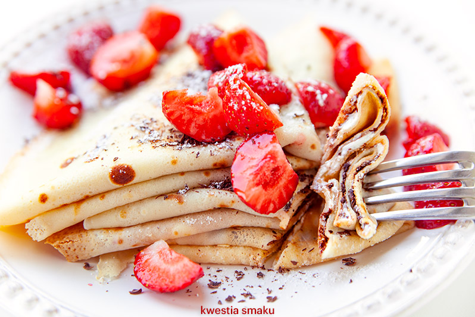

Stracciatella Crepes with Strawberries

Description
With cheese filling and grated chocolate. Pancake batter can be made from this popular recipe.
Ingredients
Pancake batter
- 130 g flour
- 325 ml milk
- 2 eggs
- 2 tablespoons sugar
- a small pinch of salt
- 30 ml melted butter or oil
Filling
- 250 g ground cottage cheese
- 4 tablespoons thick sour cream (18% fat)
- 1 tablespoon vanilla sugar
- 3 tablespoons powdered sugar
- 30 g grated or chopped chocolate (milk or dark)
Also
- Approximately 250 g strawberries
- Powdered sugar
- Whipped cream
Steps
- Pancake batter: In a bowl, combine the flour, milk, eggs, sugar, and salt. Mix until a smooth batter is formed. Add the melted butter or oil and mix again.
- Filling: Mix the cottage cheese with sour cream, vanilla sugar, and powdered sugar. Then mix in the chopped chocolate.
- Heat a pancake pan and cook the pancakes.
- Spread the filling on the pancakes and fold them into triangles. You can heat them up before serving.
- Sprinkle with chopped strawberries and powdered sugar. Serve with whipped cream if desired.